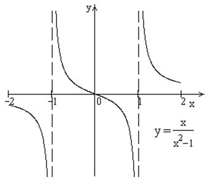

П19.1 №8
Исследуйте функцию и
постройте её график.
РЕШЕНИЕ:
1) Область определения функции: ; эти точки являются точками разрыва
функции; при функция ; при  ,
.
,
.
,
.2) Функция нечетная: . Построим график для  и отобразим его нечетным образом
относительно начала координат.
и отобразим его нечетным образом
относительно начала координат.
и отобразим его нечетным образом
относительно начала координат.3) Точка пересечения с осью  определяется условием
определяется условием
определяется условием , , для
всех из области определения,
т.е. функция является убывающей и не имеет экстремумов.
из области определения,
т.е. функция является убывающей и не имеет экстремумов. 